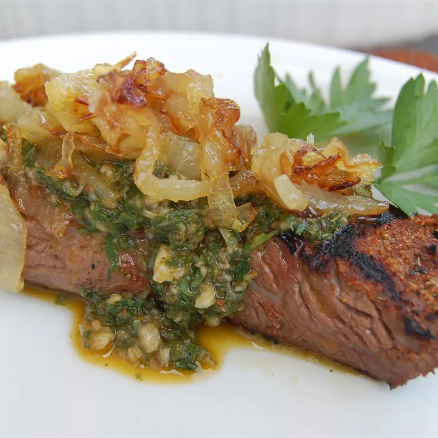

Chimichurri Sauce Recipe

Description
This famous Argentinian chimichurri sauce is perfect for any grilled chicken, meat, or fish.
Many people love it on garlic crostini with grilled flank steak slices.
Ingredients
- 1 cup fresh parsley
- 3/4 cup extra virgin olive oil
- 3 tablespoons red wine vinegar
- 2 tablespoons dried oregano
- 2 teaspoons ground cumin
- 1 1/2 teaspoons minced garlic
- 1 1/2 teaspoons pepper sauce
- 1 teaspoon salt
Steps
- Combine parsley, oil, vinegar, oregano, cumin, garlic, hot sauce, and salt in a blender or food processor.
- Mix on medium speed until ingredients are evenly blended, about 10 seconds.
- Enjoy!